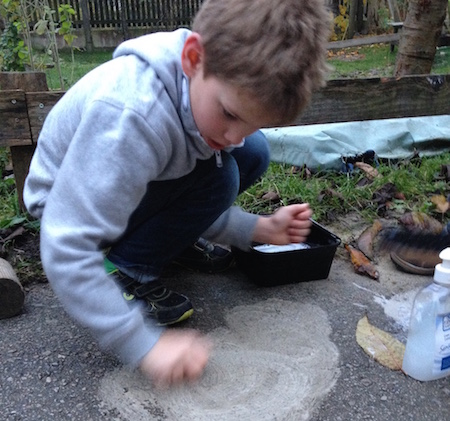

1
Was ist Sensorische Integration?
Dieser Begriff einer Behandlungsmethode für Kinder mit Lern- und Entwicklungsstörungen
wurde von Dr. Jean Ayres erstmals
1964 als "Sensory Integration Therapy" in
Kalifornien - USA geprägt.
Sensorische Integration ist eine Stimulation der Basissinne.
Die Basissinne (Gleichgewichtssinn, Tiefenwahrnehmung und Wahrnehmung über die Haut) sind das
Fundament, die Wurzeln unserer gesamten Entwicklung. An diesem Fundament wird bereits in
der Schwangerschaft als erstes gebaut. Aufgrund unserer schnelllebigen Zeit und den
hohen Leistungsanforderungen der Gesellschaft, ist es besonders wichtig,
für eine gute Basis zu sorgen. Durch unterschiedliche Faktoren benötigt diese Verwurzelung
bei vielen Kindern gezielte Unterstützung, um die Selbstregulation der Basissinne
ins Gleichgewicht zu bringen.
Für jede Handlung benötigen wir ein gutes Zusammenspiel der Sinneswahrnehmungen.
Erfolgt der Fluss der Empfindungen unorganisiert – d. h. Im Gehirn findet keine
entsprechende Verarbeitung statt – so kann keine zielgerichtete und geplante Handlung
auf die Umweltreize hervorgebracht werden.
2
Symptome
Häufig zeigen sie folgende typische Symptome:
Im Säuglingsalter
- Saug- und Schluckprobleme in Kombination mit Säuglingskoliken
- Übermäßige Unruhe mit Schreiattacken oder
- Auffallend geringe Aktivität mit langen Schlafperioden
- Irritation/Abwehr auf Lageveränderungen
- Irritation/Abwehr auf Berührung
Im Kleinkind- bzw. Schulalter
- Nächtliches Einnässen
- Verzögerte motorische Entwicklung
- „tollpatschige“, „ungeschickte“ Kinder
- Mangelndes Selbst- und Körperbewusstsein
- Verzögerte Sprachentwicklung
- Geräuschempfindlichkeiten
- Verhaltens- und Stressauffälligkeiten
- Anpassungsschwierigkeiten an neue Situationen
- Hyper- oder Hypoaktivität
3
Wie sieht die Begleitung aus?
Der Schwerpunkt liegt beim Stimulieren der Basissinne ( Haut, Gleichgewicht, Knochen und Muskeln) sie
sind die Grundlage jeder Wahrnehmung. Weiters gehen die Kinder in Entwicklungsstufen zurück die
noch nicht optimal abgeschlossen sind. Die Kinder holen sich ihren Bedarf an Reizen selbständig
durch verschiedene Materialien: unterschiedliche Schaukeln, Sandsäcke ,Creme, Matten,
Schlauch - Tunnel zum durch Krabbeln, Gebärmutterhöhle, ... Die Kinder erfahren sich ihre Reize
auch in der Natur zu holen (Sandkiste mit Lehmsand, Bäume zum klettern, Bachwanderungen, …).
So wird dem Kind eine Fülle an Sinneserfahrungen ermöglicht, die sie bei den begleitenden
Reizverarbeitungspausen sinnvoll miteinander zu verknüpfen lernen.

Die SI – Begleitungseinheit ist dem individuellen Entwicklungsstand angepasst und richtet sich
nach den Bedürfnissen des Kindes. Eine Einheit dauert 60 Minuten. Um den sozialen Bereich
zu stärken sind je nach Bedürfnissen des Kindes zwischen 1 und max. 4 Kinder anwesend. Vor der ersten
Sensorischen Integrationseinheit findet ein kennenlernen des Kindes mit beiden Elternteilen statt.
Anschließend werden wichtige Punkte und Vorgangsweisen nur mit den Eltern ohne Anwesenheit des Kindes
besprochen. Diese erste Begutachtung teilt sich folgendermaßen auf: 30 Minuten Beobachtung des Kindes
mit mindestens einen Elternteil anschließend 60 Minuten Entwicklungsgespräch ohne Kind und mit den Eltern.
Der weitere Kontakt mit den Eltern ist in der gesamten SI – Begleitung ein wichtiger Teil.
Beratungsgespräche für Hilfestellung im Alltag können in Anspruch genommen werden.
4
Ziele der SI Therapie
Das Ziel der Therapie ist eine gute Wahrnehmung und Verarbeitung der Eigen- und Tiefenwahrnehmung,
des Gleichgewichtes und der Berührung sowie eine Verknüpfung mit den anderen Sinnen.
Gezielte Reizangebote helfen dem Kind, aktiv zu handeln und zu erforschen, und somit kann beim
Gehirn eine Nachreifung stattfinden. Erfolgserlebnisse und eine Stärkung des Selbstbewusstsein
führen das Kind wieder körperlich und seelisch in seine Gleichgewicht zurück, dahin wo
es sich wohl fühlt. Dadurch wird sich auch sein Umfeld durch die positive Veränderung des Kindes verändern.
Die Eigenaktivität des Kindes helfen ihm seinen richtigen Weg zu finden,
die ihm die Tür zu weiteren Entwicklungsstufen öffnen.
Wichtige Ziele sind:
- Aufbau des Körperbewusstsein
- Handlungsplanung und Bewegungskoordination
- Förderung der koordinativen und konditionellen Fähigkeiten
- Förderung der Sprachkompetenz und Kommunikationsfähigkeit
- Selbstständigkeit
- Förderung sozialer Kompetenz ( Umgang mit anderen, Durchsetztungsvermögen, Steigerung der Frustrationsgrenze,..)
- Urvertrauen in die Welt wird aufgebaut
- Körper, Geist und Seele finden wieder zusammen